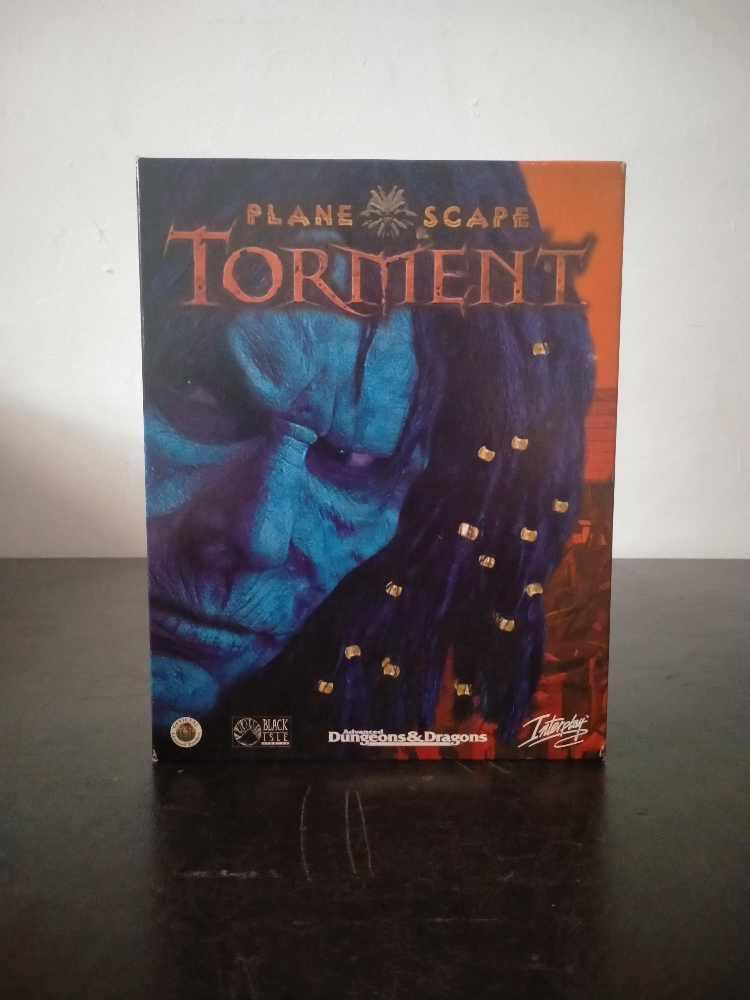

Ficha #000146
Planescape: Torment
Planescape: Torment es un juego de rol occidental desarrollado por Black Isle Studios y publicado originalmente en 1999. Ambientado en el escenario Planescape de Advanced Dungeons & Dragons, sigue al Sin Nombre, un inmortal que despierta en la Mortuary de Sigil e intenta reconstruir sus vidas anteriores y comprender la naturaleza de su condena. Utiliza el Infinity Engine de BioWare, adaptado para ofrecer una experiencia especialmente centrada en los diálogos, la exploración, las decisiones morales y el desarrollo narrativo, con menor énfasis en el combate que otros CRPG contemporáneos. Su ambientación filosófica, sus compañeros memorables y su tratamiento de temas como la identidad, la culpa, la memoria y la redención lo convirtieron en una obra de culto y en uno de los referentes narrativos del rol para PC. Esta edición española en caja grande fue distribuida por Virgin Interactive y conserva el lanzamiento original en varios CD-ROM, con textos y documentación localizados al castellano.
- Formato
- Big Box
- Plataforma
- Win95 Win98
- Género
- Rol CRPG Fantasía oscura Rol narrativo Tiempo real con pausa Isométrico
- Serie
- Todos Big Box
- Desarrollador
- Black Isle Studios
- Distribuidor
- Interplay Entertainment, Virgin Interactive España
- EAN
- 5026102003294
Contenido de la edición
- Caja de cartón Big Box
- Caja jewel case
- 4 CD-ROM
- Manual de instrucciones
- Documentación impresa
- Tarjeta promocional de Virgin Interactive
Preservación
- Protección
- Verificación de CD
- Formato recomendado
- BIN/CUE
- Jugable en virtualización
- Sí
Se recomienda preservar individualmente los cuatro CD-ROM mediante imágenes BIN/CUE, manteniendo su orden y etiquetado original. La documentación impresa también debe digitalizarse por su valor archivístico. La ejecución en máquina virtual es viable con Windows 95 o Windows 98, conservando montado el disco solicitado cuando el programa realice la comprobación de CD.